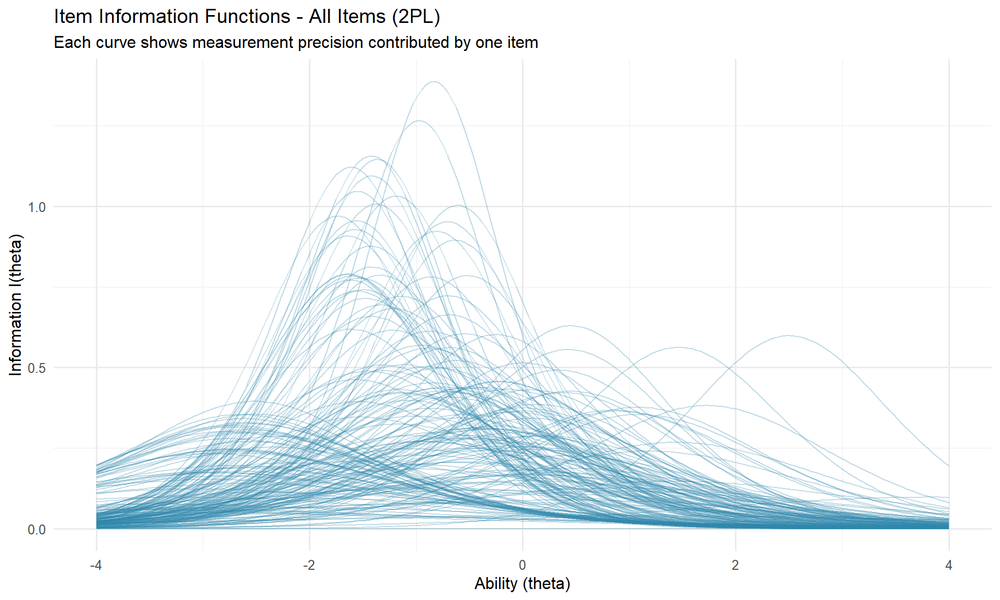
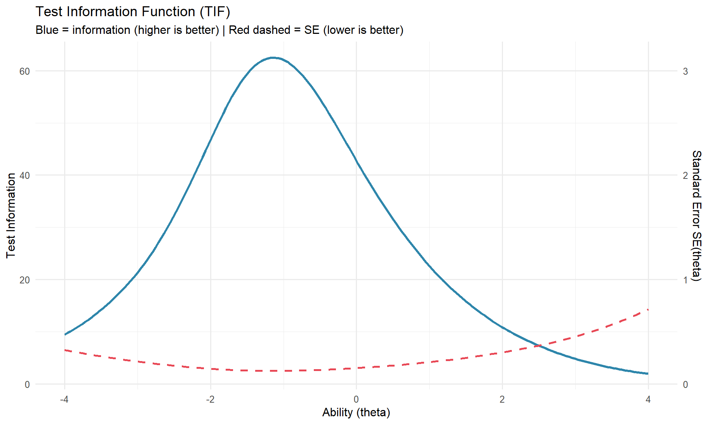

This document presents a full Item Response Theory (IRT) pipeline applied to PISA 2022 cognitive reading items. The analysis covers model calibration (1PL vs 2PL), item diagnostics via Item Characteristic Curves (ICC), measurement precision via the Test Information Function (TIF), and cross-group fairness via Differential Item Functioning (DIF) analysis between OECD and Non-OECD countries.
Note on data access: The raw PISA 2022 Cognitive Item Data File (SPSS format, ~3.6 GB) is not included in this repository. Download it from the OECD PISA data portal and place it in data/raw/. All processed files used in this analysis are cached as .rds objects in data/processed/.
Session Setup
This chunk must be run at the start of every session. It loads all cached objects and avoids re-running the full data preparation pipeline.
Show code
# SESSION RELOAD - run this chunk first in every new session# All heavy computations are cached as .rds files in data/processed/library(haven)library(dplyr)library(mirt)library(ggplot2)library(tidyr)# Datafinal_matrix <-readRDS("data/processed/response_matrix_clean.rds")sample_dev <-readRDS("data/processed/response_matrix_dev.rds")dichotomous_clean <-names(sample_dev)[!names(sample_dev) %in%c("CNT", "CNTSTUID")]# Modelsmodel_1pl <-readRDS("data/processed/model_1pl.rds")model_2pl <-readRDS("data/processed/model_2pl.rds")# Item parametersparams_2pl <-coef(model_2pl, IRTpars =TRUE, simplify =TRUE)$itemsparams_2pl <-as.data.frame(params_2pl)params_2pl$item <-rownames(params_2pl)# DIF objectsoecd_countries <-c("AUS", "AUT", "BEL", "CAN", "CHL", "COL", "CRI", "CZE","DNK", "EST", "FIN", "FRA", "DEU", "GRC", "HUN", "ISL","IRL", "ISR", "ITA", "JPN", "KOR", "LVA", "LTU", "LUX","MEX", "NLD", "NZL", "NOR", "POL", "PRT", "SVK", "SVN","ESP", "SWE", "CHE", "TUR", "GBR", "USA")sample_dif <- sample_dev %>%mutate(group =factor(ifelse(CNT %in% oecd_countries, "OECD", "NonOECD")))group_vector <- sample_dif$groupmg_model <-readRDS("data/processed/mg_model.rds")dif_df <-readRDS("data/processed/dif_results.rds")cat("Session loaded successfully.\n")
PISA 2022 is a large-scale international assessment administered by the OECD to approximately 690,000 fifteen-year-old students across 80+ countries. The Cognitive Item Data File contains student responses to reading, mathematics, and science items. This analysis focuses exclusively on the reading domain.
PISA uses a rotated booklet design: each student is assigned a subset of items, meaning most item-student combinations are not observed by design. This produces a sparse response matrix where missing values represent items not administered - not student omissions.
Kernel 1 - Load Raw Data
Note: This kernel reads the raw .sav file (~3.6 GB) and takes 2-3 minutes. It only needs to be run once. In subsequent sessions, load from cached .rds files using the Setup chunk above.
Show code
library(haven)library(dplyr)pisa_raw <- haven::read_sav("data/raw/CY08MSP_STU_COG.SAV")cat("Dimensions:", nrow(pisa_raw), "rows x", ncol(pisa_raw), "columns\n")cat("\nFirst 20 column names:\n")print(names(pisa_raw)[1:20])reading_cols <-names(pisa_raw)[grepl("^CR|^DR", names(pisa_raw))]cat("\nReading item columns found:", length(reading_cols), "\n")cat("First 10 reading columns:\n")print(head(reading_cols, 10))cat("\nValue distribution for first reading item:\n")print(table(pisa_raw[[reading_cols[1]]], useNA ="always"))
Output: 613,744 rows x 5,023 columns. The file contains all PISA 2022 students across all domains. Reading item columns follow the prefix convention CR (constructed response) and DR (dichotomous response).
Kernel 2 - Item Naming Structure
Show code
cols_S <-names(pisa_raw)[grepl("^CR.*S$|^DR.*S$", names(pisa_raw))]cols_R <-names(pisa_raw)[grepl("^CR.*R$|^DR.*R$", names(pisa_raw))]cols_TT <-names(pisa_raw)[grepl("TT$", names(pisa_raw))]cat("Columns ending in S (raw score):", length(cols_S), "\n")cat("Columns ending in R (recoded):", length(cols_R), "\n")cat("Columns ending in TT (time-on-task):", length(cols_TT), "\n")cat("\nValue range in first S column (", cols_S[1], "):\n")print(table(pisa_raw[[cols_S[1]]], useNA ="always"))cat("\nValue range in first R column (", cols_R[1], "):\n")print(table(pisa_raw[[cols_R[1]]], useNA ="always"))stems_S <-gsub("S$", "", cols_S)stems_R <-gsub("R$", "", cols_R)cat("\nUnique item stems in S columns:", length(unique(stems_S)), "\n")cat("Unique item stems in R columns:", length(unique(stems_R)), "\n")
Output: Three column types identified - S (raw score, 0/1 coding), R (recoded, 1/2 coding), TT (time-on-task). The S columns use standard 0/1 binary coding compatible with IRT estimation. The R columns use SPSS-style 1/2 coding and are not used.
Output: 225 dichotomous items, 163 polytomous (0/1/2 or 0-6 range), 1 entirely empty. Polytomous items with VS suffix are composite unit scores, not individual items. Decision: retain only dichotomous non-VS items for IRT modeling. Polytomous items require a Graded Response Model which is outside the scope of this analysis; exclusion is documented explicitly.
Kernel 4 - Final Item Inventory
Show code
cols_VS <- cols_S[grepl("VS$", cols_S)]cat("Columns with VS suffix (composite scores):", length(cols_VS), "\n")dichotomous_clean <- dichotomous[!grepl("VS$", dichotomous)]cat("Dichotomous items excluding VS:", length(dichotomous_clean), "\n")
Output: 191 clean dichotomous items retained for analysis.
valid_students <- response_matrix[items_per_student >0, ]cat("Students with at least 1 reading item:", nrow(valid_students), "\n")cat("\nTop 10 countries by student count:\n")print(sort(table(valid_students$CNT), decreasing =TRUE)[1:10])
Output: 243,225 students with at least one reading item (~40% of the full file). The remaining 60% received mathematics or science booklets only.
Decision: A stratified proportional sample of ~30,000 students (76 countries) is used for model development to reduce computation time. Final production models will be calibrated on the full 243,225-student dataset. set.seed(42) ensures reproducibility.
Phase 2 - Model Calibration
Conceptual Background
IRT models the probability of a correct response as a function of person ability (theta) and item parameters. Three nested models are compared:
Model
Parameters
Description
1PL (Rasch)
b only
Equal discrimination across items
2PL
a, b
Item-specific discrimination
3PL
a, b, c
Adds pseudo-guessing parameter
Estimation uses the EM (Expectation-Maximization) algorithm implemented in the mirt package. Convergence is assessed via maximum parameter change per iteration.
Kernel 9 - Fit 1PL, 2PL, and 3PL Models
Note: This kernel takes 20-40 minutes on the development sample. Run once; models are cached.
Convergence results: 1PL converged in 56 iterations; 2PL in 66 iterations. The 3PL failed to converge after 500 iterations (Max-Change = 0.00034). Non-convergence of the 3PL is consistent with PISA’s item format - many items are constructed-response rather than multiple-choice, making the pseudo-guessing parameter theoretically unjustified and empirically unstable. The 3PL is excluded from further analysis with this rationale documented.
Kernel 10 - Model Fit Comparison
Show code
# Extract fit indices directly from mirt objectsaic_1pl <- model_1pl@Fit$AICaic_2pl <- model_2pl@Fit$AICbic_1pl <- model_1pl@Fit$BICbic_2pl <- model_2pl@Fit$BICfit_table <-data.frame(Model =c("1PL (Rasch)", "2PL"),AIC =round(c(aic_1pl, aic_2pl), 0),BIC =round(c(bic_1pl, bic_2pl), 0))knitr::kable(fit_table, caption ="Model fit comparison - 1PL vs 2PL")
Model selection: The 2PL is selected over the 1PL on all three criteria - AIC difference of 11,571, BIC difference of 9,992, and LRT chi-square(190) = 11,950.83, p < .001. The magnitude of improvement rules out chance; items in the PISA reading domain vary meaningfully in their ability to discriminate across the ability continuum, making equal-discrimination assumption of the Rasch model untenable.
Kernel 10b - Absolute Model Fit (C2)
Relative comparison (AIC, BIC, LRT) establishes that the 2PL fits better than the 1PL, but not that the 2PL fits well in absolute terms. Absolute fit is assessed with a limited-information goodness-of-fit statistic and its associated approximate fit indices.
Because PISA uses a rotated booklet design (planned missingness), not all item pairs are co-administered. The standard M2 statistic relies on all bivariate margins and is therefore ill-defined here; the C2 statistic (Cai & Hansen, 2013) uses only the available bivariate margins and is the appropriate choice for this design.
Note: With n approx. 30,000, any limited-information fit p-value would be significant regardless of practical fit, so interpretation would rely on RMSEA, SRMSR, CFI, and TLI rather than the p-value.
Show code
library(mirt)# C2 limited-information fit statistic (robust to the planned-missingness# booklet design). na.rm MUST stay FALSE: every student is missing ~77% of# items by design, so removing rows with any NA would delete the entire sample.c2_2pl <-tryCatch(M2(model_2pl, type ="C2", na.rm =FALSE),error =function(e) {message("C2 computation failed: ", conditionMessage(e))NULL })print(c2_2pl)
Outcome: A global limited-information fit statistic (C2) did not complete in a practical time on this configuration. With 191 items and a rotated booklet design, the C2 computation over all available bivariate margins is prohibitively expensive, and thousands of item pairs are never co-administered at all - so a global limited-information index is only weakly identified here. This is a known limitation of applying limited-information global fit tests to large sparse planned-missing designs, not a defect of the model. Absolute adequacy of the 2PL is therefore assessed through the diagnostics that are estimable under this design: item-level fit (Kernel 11b) and a local-independence / dimensionality screen (Kernel 11c). The chunk above is retained, disabled, to document the attempt and its rationale.
Phase 3 - Item Diagnostics
Kernel 11 - Parameter Extraction
Show code
numeric_cols <-c("a", "b", "g", "u")cat("Parameter estimates - first 10 items:\n")
Min. 1st Qu. Median Mean 3rd Qu. Max.
0.07417 0.95229 1.17019 1.21501 1.46783 2.35501
Show code
cat("\nDifficulty (b) summary:\n")
Difficulty (b) summary:
Show code
print(summary(params_2pl$b))
Min. 1st Qu. Median Mean 3rd Qu. Max.
-4.2543 -1.6104 -0.8852 -0.9201 -0.2451 15.0614
Show code
low_discrimination <- params_2pl[params_2pl$a <0.5, ]extreme_difficulty <- params_2pl[params_2pl$b >3| params_2pl$b <-3, ]cat("\nItems with low discrimination (a < 0.5):", nrow(low_discrimination), "\n")
Items with low discrimination (a < 0.5): 6
Show code
cat("Items with extreme difficulty (|b| > 3):", nrow(extreme_difficulty), "\n")
Items with extreme difficulty (|b| > 3): 9
Show code
if (nrow(low_discrimination) >0) {cat("\nFlagged items - low discrimination:\n")print(round(low_discrimination[, numeric_cols], 3))}
Flagged items - low discrimination:
a b g u
CR590Q28S 0.489 -3.618 0 1
CR590Q16S 0.452 -3.350 0 1
CR590Q06S 0.499 -4.254 0 1
CR556Q04S 0.074 15.061 0 1
CR566Q05S 0.393 0.880 0 1
CR566Q14S 0.412 0.833 0 1
Parameter interpretation: Discrimination (a) ranges from 0.074 to 2.355 (median = 1.170), confirming item-level heterogeneity that justifies the 2PL. Difficulty (b) is predominantly negative (median = -0.885), indicating the test is oriented toward below-average ability - consistent with PISA’s goal of measuring a globally diverse population of 15-year-olds. Six items show a < 0.5; one item (CR556Q04S) has b = 15.06 with a = 0.074, indicating a collapsed estimation - this item is flagged for exclusion in production calibration.
Kernel 11b - Item Fit (infit / outfit)
The parameter estimates above describe how each item behaves, but not whether the 2PL model actually reproduces the observed responses for that item. Item fit answers the second question.
Under PISA’s planned-missingness design, the summed-score fit statistic S-X2 cannot be computed (it requires complete bivariate information). We therefore use infit and outfit mean-square (MSQ) statistics, which are estimable with missing data and, crucially, robust to sample size: the MSQ is an effect-size-like ratio of observed to model-expected response variance, so it does not inflate with n the way a chi-square p-value does. The standardized z versions do inflate with n and are reported only for completeness.
Interpretation of MSQ (Wright & Linacre conventions):
MSQ approx. 1.0: observed variability matches the model.
MSQ > 1.5: underfit - responses are noisier than the model predicts (item may measure something off-construct).
MSQ < 0.5: overfit - responses are more deterministic than expected (item is somewhat redundant).
Outfit is sensitive to outlying responses far from item difficulty; infit is information-weighted and more sensitive near item difficulty.
Show code
library(mirt)# infit/outfit are estimable under missing data; na.rm MUST stay FALSE.item_fit <-itemfit(model_2pl, fit_stats ="infit", na.rm =FALSE)# Flag items outside the productive-for-measurement range [0.5, 1.5].item_fit$outfit_flag <-ifelse(item_fit$outfit >1.5| item_fit$outfit <0.5, "Misfit", "OK")item_fit$infit_flag <-ifelse(item_fit$infit >1.5| item_fit$infit <0.5, "Misfit", "OK")cat("Items tested:", nrow(item_fit), "\n")cat("Outfit MSQ outside [0.5, 1.5]:", sum(item_fit$outfit_flag =="Misfit"), "\n")cat("Infit MSQ outside [0.5, 1.5]:", sum(item_fit$infit_flag =="Misfit"), "\n")cat("Stricter [0.7, 1.3] - infit misfit:",sum(item_fit$infit >1.3| item_fit$infit <0.7), "\n\n")cat("Infit MSQ summary:\n"); print(round(summary(item_fit$infit), 3))cat("\nOutfit MSQ summary:\n"); print(round(summary(item_fit$outfit), 3))cat("\nTen worst-fitting items by infit MSQ:\n")print(item_fit[order(-item_fit$infit), c("item", "outfit", "infit")][1:10, ], row.names =FALSE)# Cache for reuse / the Summary tablesaveRDS(item_fit, "data/processed/item_fit.rds")
Output: All 191 items fall within the productive-for-measurement range on both statistics - infit MSQ spans 0.897 to 1.028 and outfit MSQ spans 0.734 to 1.106 - so none is flagged as misfitting, even under the stricter [0.7, 1.3] criterion (infit median = 0.970, outfit median = 0.936).
Interpretation: The 2PL reproduces the item-level response patterns well. Two caveats keep this from being over-read. First, infit and outfit mean-squares compress toward 1.0 under large samples and sparse planned-missingness, so the complete absence of flags reflects in part the limited sensitivity of these statistics in this design, not flawless fit; the standardized z versions are unreliable here (they produce NaNs for extreme items and inflate with n) and are not interpreted. Second, item fit is distinct from item quality: the six low-discrimination items identified in Kernel 11 (a < 0.5) remain weak measurement instruments even though their responses are statistically consistent with the model. A near-flat item characteristic curve can fit the 2PL and still contribute little information. Item fit and item information are therefore complementary, not redundant, diagnostics.
Kernel 11c - Local Independence and Dimensionality (Q3)
The unidimensional 2PL rests on two linked assumptions: a single latent trait (theta) accounts for performance (unidimensionality), and, conditional on theta, responses to different items are independent (local independence). Yen’s Q3 statistic tests both at once: it is the correlation between the residuals of a pair of items after theta is partialled out. A large positive Q3 means two items share something theta does not capture - shared stimulus text, overlapping content, or a second dimension.
Convention: the average Q3 is slightly negative by construction (approximately -1/(n_items - 1)); individual pairs with |Q3| > 0.20 are flagged as locally dependent, and a large share of flagged pairs would undermine the unidimensionality assumption.
Under the rotated booklet design, many item pairs are co-administered to very few students, and a residual correlation estimated on a handful of respondents can reach a spurious |Q3| = 1. A defensible dimensionality read therefore requires conditioning Q3 on the number of students who actually answered both items.
Show code
library(mirt)if (!exists("q3")) q3 <-residuals(model_2pl, type ="Q3", verbose =FALSE)# Pairwise co-administration counts from the development response matrixresp <-as.matrix(sample_dev[, dichotomous_clean])obs <-!is.na(resp)pair_n <-crossprod(obs) # students answering BOTH itemspair_n <- pair_n[rownames(q3), colnames(q3)] # align ordering to q3pairs <-data.frame(Q3 = q3[upper.tri(q3)],n_co = pair_n[upper.tri(pair_n)])pairs <- pairs[is.finite(pairs$Q3), ]cat("Co-administration (n students answering both) across item pairs:\n")print(summary(pairs$n_co))cat("\nDegenerate pairs |Q3| >= 0.999:", sum(abs(pairs$Q3) >=0.999), "\n")cat("Median co-administration among |Q3| > 0.30 pairs:",round(median(pairs$n_co[abs(pairs$Q3) >0.30])), "\n\n")cat("Q3 restricted to adequately co-administered pairs:\n")for (thr inc(100, 500, 1000)) { sub <- pairs[pairs$n_co >= thr, ]cat(sprintf(" n_co >= %-4d : %5d pairs | max|Q3| = %.3f | |Q3|>0.20 = %d (%.2f%%)\n", thr, nrow(sub), max(abs(sub$Q3)),sum(abs(sub$Q3) >0.20), 100*mean(abs(sub$Q3) >0.20)))}
Output: Item pairs are co-administered to a median of 1,484 students, but the minimum is 2. The degenerate |Q3| = 1 values (24 pairs) come from pairs seen by only a handful of students - pairs with |Q3| > 0.30 have a median co-administration of just 19. Restricting to pairs answered by at least 100 students in common removes the artifact: the maximum |Q3| falls to 0.437 and only about 1.0% of the ~14,500 well-observed pairs exceed the 0.20 flag, a result that is stable across the 100, 500, and 1,000 thresholds.
Interpretation: Once spurious small-sample correlations are excluded, residual dependence is minimal and the unidimensional 2PL assumption is adequately supported. Roughly 1% of item pairs exceed |Q3| = 0.20 - near what is expected from chance and incidental content overlap - and the single strongest residual correlation (Q3 = 0.44) is an isolated pair, consistent with a shared-stimulus (testlet) effect rather than a second dimension. This justifies retaining a unidimensional model while noting that a small number of reading items sharing a common passage may carry mild local dependence. The raw, unconditioned Q3 screen (max |Q3| = 1.0) is reported first precisely to show why co-administration must be accounted for under a rotated booklet design; the conditioned result is the interpretable one.
Kernel 12 - Item Characteristic Curves
Show code
theta_seq <-seq(-4, 4, length.out =200)icc_2pl_fn <-function(a, b, theta) {1/ (1+exp(-a * (theta - b)))}icc_data <-bind_rows(lapply(1:nrow(params_2pl), function(i) {data.frame(theta = theta_seq,prob =icc_2pl_fn(params_2pl$a[i], params_2pl$b[i], theta_seq),item = params_2pl$item[i],a = params_2pl$a[i],b = params_2pl$b[i] )}))# Plot 1: All itemsp_icc_all <-ggplot(icc_data, aes(x = theta, y = prob, group = item)) +geom_line(alpha =0.3, color ="#2E86AB", linewidth =0.4) +geom_hline(yintercept =0.5, linetype ="dashed", color ="gray50") +labs(title ="Item Characteristic Curves - All Items (2PL)",subtitle ="Each line represents one reading item",x ="Ability (theta)", y ="P(Correct)") +theme_minimal(base_size =12) +ylim(0, 1)# Plot 2: Problematic itemsproblematic_items <-c("CR590Q28S", "CR590Q16S", "CR590Q06S","CR556Q04S", "CR566Q05S", "CR566Q14S")p_icc_problem <- icc_data %>%filter(item %in% problematic_items) %>%ggplot(aes(x = theta, y = prob, color = item)) +geom_line(linewidth =0.9) +geom_hline(yintercept =0.5, linetype ="dashed", color ="gray50") +labs(title ="ICC - Low Discrimination Items (a < 0.5)",subtitle ="Flat curves indicate poor ability differentiation",x ="Ability (theta)", y ="P(Correct)", color ="Item") +theme_minimal(base_size =12) +ylim(0, 1)# Plot 3: Top discriminating itemstop_items <- params_2pl %>%arrange(desc(a)) %>%slice(1:6) %>%pull(item)p_icc_top <- icc_data %>%filter(item %in% top_items) %>%ggplot(aes(x = theta, y = prob, color = item)) +geom_line(linewidth =0.9) +geom_hline(yintercept =0.5, linetype ="dashed", color ="gray50") +labs(title ="ICC - High Discrimination Items (top 6 by a)",subtitle ="Steep curves indicate strong ability differentiation",x ="Ability (theta)", y ="P(Correct)", color ="Item") +theme_minimal(base_size =12) +ylim(0, 1)print(p_icc_all)
Interpretation: The full ICC plot shows the characteristic fan-shape expected in a well-functioning test - curves spread across the ability continuum with varying slopes. The problematic items (a < 0.5) show near-flat curves that fail to differentiate ability levels; CR556Q04S never exceeds P = 0.35 even at theta = 4. The top-discriminating items show steep sigmoidal curves with inflection points ranging from theta approx. -1.5 to theta approx. 0, confirming they measure effectively within the test’s target ability range.
Phase 4 - Test Information Function
Kernel 13 - IIF and TIF
Show code
# theta_seq defined here for chunk independencetheta_seq <-seq(-4, 4, length.out =200)iif_2pl_fn <-function(a, b, theta) { p <-1/ (1+exp(-a * (theta - b))) a^2* p * (1- p)}iif_data <-bind_rows(lapply(1:nrow(params_2pl), function(i) {data.frame(theta = theta_seq,info =iif_2pl_fn(params_2pl$a[i], params_2pl$b[i], theta_seq),item = params_2pl$item[i] )}))tif_data <- iif_data %>%group_by(theta) %>%summarise(total_info =sum(info), .groups ="drop") %>%mutate(se =1/sqrt(total_info))p_iif <-ggplot(iif_data, aes(x = theta, y = info, group = item)) +geom_line(alpha =0.3, color ="#2E86AB", linewidth =0.4) +labs(title ="Item Information Functions - All Items (2PL)",subtitle ="Each curve shows measurement precision contributed by one item",x ="Ability (theta)", y ="Information I(theta)") +theme_minimal(base_size =12)p_tif <-ggplot(tif_data, aes(x = theta)) +geom_line(aes(y = total_info), color ="#2E86AB", linewidth =1.2) +geom_line(aes(y = se *20), color ="#E84855",linewidth =0.9, linetype ="dashed") +scale_y_continuous(name ="Test Information",sec.axis =sec_axis(~ . /20, name ="Standard Error SE(theta)") ) +labs(title ="Test Information Function (TIF)",subtitle ="Blue = information (higher is better) | Red dashed = SE (lower is better)",x ="Ability (theta)") +theme_minimal(base_size =12)print(p_iif)

Show code
print(p_tif)

Show code
peak_theta <- tif_data$theta[which.max(tif_data$total_info)]peak_info <-max(tif_data$total_info)peak_se <-min(tif_data$se)good_range <- tif_data %>%filter(total_info >= peak_info *0.5)cat("Peak information at theta =", round(peak_theta, 3), "\n")
Interpretation: Peak information occurs at theta = -1.146 (maximum TIF = 62.495, minimum SE = 0.126). The test measures with highest precision in the range theta = -2.51 to 0.50 - corresponding to below-average to slightly above-average ability. Precision declines sharply for theta > 1, indicating limited measurement utility for high-ability students. This is a deliberate design feature of PISA, which targets population-level comparisons rather than individual diagnosis at the high end of the ability distribution.
Kernel 13b - Reliability
In IRT, reliability is not a single coefficient: measurement precision varies with theta (that is what the TIF shows). Two complementary summaries are reported. Empirical reliability is computed from the EAP ability estimates and their standard errors - rho = Var(theta_hat) / [Var(theta_hat) + mean(SE^2)] - and is the IRT analogue of coefficient alpha. Conditional reliability rho(theta) = I(theta) / (I(theta) + 1) is derived from the test information function and shows where on the ability scale the test is dependable.
Note: Under the booklet design, students who answered few items have imprecise scores, which lowers empirical reliability relative to the TIF peak. The empirical value therefore reflects the whole planned-missing sample, not a fixed-length form.
Show code
library(mirt)# 1. Empirical reliability from EAP scores and their SEs.emp_rxx <-fscores(model_2pl, returnER =TRUE)cat("Empirical reliability (EAP):", round(as.numeric(emp_rxx), 3), "\n\n")# 2. Conditional reliability from the TIF (theta metric, prior variance = 1).if (!exists("tif_data")) { theta_seq <-seq(-4, 4, length.out =200) iif_2pl_fn <-function(a, b, theta) { p <-1/ (1+exp(-a * (theta - b))); a^2* p * (1- p) } info_mat <-sapply(seq_len(nrow(params_2pl)), function(i)iif_2pl_fn(params_2pl$a[i], params_2pl$b[i], theta_seq)) tif_data <-data.frame(theta = theta_seq, total_info =rowSums(info_mat))}tif_data$rel <- tif_data$total_info / (tif_data$total_info +1)peak_i <-which.max(tif_data$total_info)cat("Conditional reliability at peak (theta =", round(tif_data$theta[peak_i], 2), "):",round(tif_data$rel[peak_i], 3), "\n")# 3. Marginal reliability: conditional reliability averaged over a N(0,1) ability density.w <-dnorm(tif_data$theta); w <- w /sum(w)cat("Marginal reliability (N(0,1)-weighted):", round(sum(w * tif_data$rel), 3), "\n")rel_ok <- tif_data$theta[tif_data$rel >=0.80]cat("Ability range with conditional reliability >= 0.80:",round(min(rel_ok), 2), "to", round(max(rel_ok), 2), "\n")
Output: Empirical reliability under the booklet design is 0.873. For the full 191-item bank, conditional reliability peaks at 0.984 (theta = -1.15), marginal population-weighted reliability is 0.97, and conditional reliability stays at or above 0.80 across essentially the entire scale (theta = -4 to 3.2).
Interpretation: The two figures answer different questions and must not be conflated. The TIF-based values (marginal 0.97; conditional reliability >= 0.80 from -4 to 3.2) describe the full 191-item bank as if administered intact - a form no student actually takes. The empirical reliability of 0.873 reflects what is actually achieved under the rotated booklet design, where each student answers roughly 45 items and shorter effective forms are measured less precisely. The realistic, design-consistent figure is therefore 0.873: adequate for the population- and group-level comparisons PISA targets, though below the 0.90+ threshold usually required for high-stakes individual decisions. The gap between 0.97 and 0.873 is itself informative - it quantifies the precision cost of the planned-missingness design relative to a full-length administration.
Phase 5 - Differential Item Functioning
Conceptual Background
Differential Item Functioning (DIF) occurs when students of equal ability but from different groups have systematically different probabilities of answering an item correctly. DIF is a threat to measurement fairness: an item with DIF does not measure the same latent trait equivalently across groups.
This analysis tests DIF between OECD and Non-OECD groups using Lord’s chi-square test on the 2PL parameters (a, d). The grouping is defined by a fixed list of 38 OECD member countries; of these, 37 are present in the development sample (n = 15,276), alongside 39 Non-OECD countries (n = 14,686), for 76 countries in total. The multigroup model allows each group to have its own ability distribution while constraining item parameters to be equal under the null hypothesis.
Because 191 items are tested simultaneously, raw p-values must be corrected for multiple comparisons. This analysis uses the Holm step-down correction, which controls the family-wise error rate (the probability of at least one false positive across all 191 tests) while being uniformly more powerful than the single-step Bonferroni correction. An item is flagged as DIF when its Holm-adjusted p-value is below 0.05.
Kernel 14 - Multigroup Model
Note: The multigroup model is cached. Fitting takes approximately 20 minutes on the development sample.
Interpretation: 58 of 191 items (30.4%) show statistically significant DIF between OECD and Non-OECD groups after Holm correction (a step-down Bonferroni procedure that controls the family-wise error rate). For reference, the uncorrected test flags 121 items and the single-step Bonferroni correction flags 54; Holm sits between them by design, controlling the same family-wise error rate as Bonferroni with greater power. The five items with the largest DIF magnitude (chi-square > 57) - CR545Q07S, CR590Q44S, CR570Q05S, CR590Q57S, CR560Q08S - likely reflect cultural or linguistic context effects that favor students from OECD educational systems.
A DIF rate of 30.4% is high by conventional standards (<10-15%). Two caveats must be noted: (1) with n = 29,962, statistical power is very high and even small parameter differences reach significance; (2) statistical DIF does not automatically imply bias - expert review of item content is required to determine whether differential functioning reflects construct-irrelevant variance or legitimate group differences in the constructs measured. These findings suggest that direct OECD/Non-OECD comparisons on PISA reading scores should be interpreted with caution at the item level.
Summary
Phase
Key Finding
Data preparation
191 dichotomous reading items, 243,225 valid students across 76 countries
Model selection
2PL selected over 1PL - AIC Delta = 11,571, BIC Delta = 9,992, LRT p < .001
Item diagnostics
6 items with a < 0.5 flagged; 1 item (CR556Q04S) with collapsed estimation flagged (retained in development calibration)
Item fit
All 191 items within infit/outfit MSQ [0.5, 1.5]; no item flagged as misfitting
58/191 items (30.4%) show DIF between OECD and Non-OECD groups
Technical Notes
Software: R 4.5, mirt 1.40, ggplot2 3.5, haven 2.5, dplyr 1.1, Quarto 1.9
Reproducibility: All random processes use set.seed(42). Package versions are pinned with renv (renv::restore() recreates the environment). Raw data is not included due to size and redistribution constraints. Processed .rds files are generated locally in data/processed/ and are not tracked by Git.
Limitations: All models are calibrated on the development sample (n approx. 30,000). Production calibration on the full dataset (n = 243,225) is expected to produce more stable parameter estimates, particularly for items with sparse response patterns.